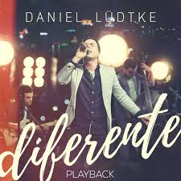
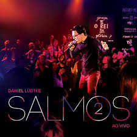
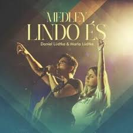
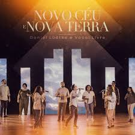

Com mais de 1 bilhão de visualizações no youtube em seus projetos de worship e infantil ( “Minha vida é uma viagem” e “Família Lüdtke” ), Daniel Lüdtke é um apaixonado por músicas que trazem textos e histórias da Bíblia. Em 2011 gravou seu primeiro álbum – chamado “Salmos” –, com melodias fáceis de memorizar e baseadas em versículos da Bíblia. De lá pra cá, foram 13 álbuns e mais de 120 canções gravadas.
Como essa carreira musical começou?
O amor pela música existiu desde sempre. Como filho de pastor e filho de músicos, sempre esteve envolvido com a música em casa e na igreja. Aos 6 anos começou a aprender piano com sua mãe, aos 14 saxofone, aos 17 violino e, por fim, violão aos 23, instrumento que hoje é sua principal ferramenta de trabalho. Paralelamente, Lüdtke cantou em corais e grupos infantis na igreja – enquanto também tinha um trio com sua irmã e irmão (embora eles não gostassem das músicas que Daniel compunha). No tempo da adolescência, cantou em grupos, quartetos, corais, e nem sabia que estava se preparando para uma carreira solo. Em 2010, enquanto orava para ler o livro de Salmos em seu devocional diário, sentiu Deus lhe dizendo para escrever canções com letras daqueles salmos. Depois de compor várias canções, decidiu apresentá-las à Novo Tempo, rede de comunicação cristã com uma das maiores TVs e gravadoras do gospel. A ideia era só mostrar as canções, mas o resultado foi rápido e inesperado: seis meses depois Daniel Lüdtke estava como o primeiro DVD gravado.
Principais álbuns de sua carreira
Um dos álbuns mais recentes de Daniel, “Salmos 2”, recebeu disco de platina pelas mais de 50 milhões de execuções. Prova de um ministério que se torna mais relevante com o passar do tempo. E a relevância abrange todas as faixas etárias. Lüdtke gravou um projeto voltado para adolescentes e jovens, o álbum “Diferente”. Também gravou um álbum com canções românticas cristãs, o “Amar pra sempre”. Outro exemplo é o canal infantil “Minha vida é uma viagem”. Criado em 2015, é um dos maiores canais infantis gospel do Brasil, que produz juntamente com sua esposa Marla Lüdtke.
Álbuns, EP's e Singles
| Álbum/EP/Single | Ano | Capa | Álbum/EP/Single | Ano | Capa |
|---|---|---|---|---|---|
| Salmos | 2011 | Filhos de Israel | 2012 | ||
| Luz do Mundo | 2014 | Diferente | 2016 |  | |
| Salmos 2 | 2018 |  | Ele me Amparou | 2019 | |
| Todo | 2019 | Amar pra Sempre | 2020 | ||
| Hino Perfeito | 2020 | Escudo | 2021 | ||
| Robot | 2021 | Salmos en Español | 2021 | ||
| Brasil pra Todo Lado | 2022 | Deus é Sábio Demais para Errar | 2022 | ||
| Medley - Os Meus Lábios Te Louvam | 2022 | Só Tu és Digno | 2023 |  |
|
| Medley - Lindo És | 2023 |  | Novo Céu e Nova Terra | 2023 |  |